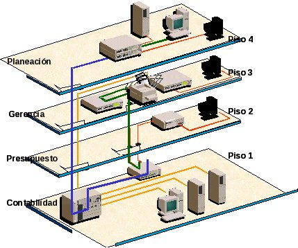
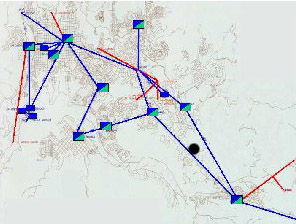
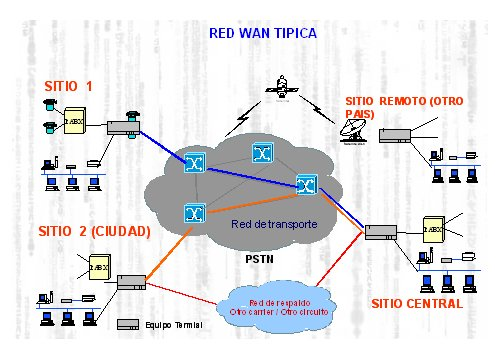

1. Clasificación de las redes
La clasificación de las redes puede realizarse desde distintos puntos de vista, pero la más general es la que se realiza en función del número de equipos conectados y la distancia a la que se encuentran, de tal forma que hay tres tipos de red:
| Red de área local o LAN (Local Area Network).- se denomina así a las redes formadas por un número de equipos dentro de una zona limitada. Su aplicación más usual es la interconexión de ordenadores personales que comparten información, recursos y software. Las LAN permiten realizar procesos distribuidos repartiendo las tareas en distintos nodos, centralizando la información y facilitando la gestión de los recursos. Se utilizan en oficinas, instituciones, fábricas, etc. |

|
| Red de área metropolitana o MAN (Metropolitan Area Network).- son redes más extensas que las LAN. Proporciona capacidad de integración de múltiples servicios mediante la transmisión de información (datos, voz, vídeo) sobre medios de transmisión de alta velocidad tales como fibra óptica y par trenzado. Sus mayores ventajas son que posibilitan la comunicación de las LAN y que pueden utilizar tecnología Wifi. Pueden ser públicas o privadas y a veces incluyen áreas más extensas que las metropolitanas. |

|
| Red extendida o WAN (Wide Area Network).- estas redes comprenden grandes zonas geográficas siendo la más conocida internet. Su función fundamental es la interconexión de equipos que se encuentran ubicados a grandes distancias, para lo que utilizan potentes nodos de conmutación. Se suele decir que tienen carácter público puesto que la información proviene de diferentes fuentes y es utilizada por multitud de usuarios, a deiferencia de las LAN incluso de las MAN, cuyo uso suele ser restingido. |

|
|
Img 12, 13, 14. Redes LAN, MAN Y WAN Imágenes obtenidas en Open Course Ware bajo licencia CC |
Importante
Las redes se pueden clasificar:
- Red de área local o LAN: redes formadas por un número de equipos dentro de una zona limitada.
- Red de área metropolitana o MAN: redes más extensas que las LAN. Utilizan medios de transmisión de alta velocidad.
- Red extendida o WAN: redes que comprenden grandes zonas geográficas. Un buen ejemplo puede ser Internet.